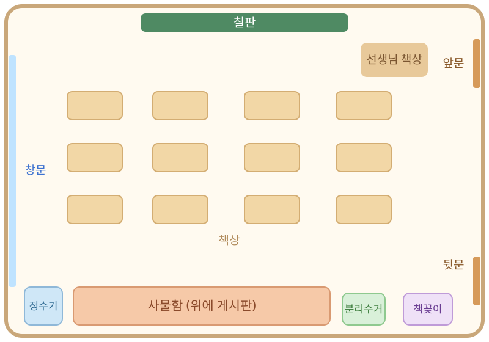

4번 방 · 17차시 · 모두의 마을
우리 교실 불편함 지도
관찰 안경을 쓰고 찾은 불편한 곳을 지도에 표시해요.

번호
이름
1
지도에 ★과 번호를 표시해요
우리 교실과 다르면 고쳐 그려도 돼요
★1 ★2 ★3👓 관찰 안경 : 🧑🦽 휠체어 친구🧒 1학년 동생🩹 팔 다친 친구🌏 새 친구
2
어디가, 누구에게, 왜 불편할까요?
얼마나 불편한지 ○ 하나를 색칠해요| ★ | 어디? | 누구에게? | 왜 불편할까요? | 얼마나? 🟡조금 🟠꽤 🔴많이 |
|---|---|---|---|---|
| 1 | 뒷문 문턱 | 🧑🦽 | 문턱이 튀어나와서 바퀴가 걸려요. | |
| 2 | 사물함 위 게시판 | 🧒 | 너무 높아서 작품을 직접 붙일 수 없어요. | |
| 3 | 책상 사이 통로 | 🩹 | 바닥의 가방에 걸려 넘어질 수 있어요. |
★
가장 먼저 바꾸고 싶은 곳은?
뒷문 문턱
넘어지면 다칠 수 있어서 가장 급해요.
관찰 안경을 쓰고
살펴보았어요☆☆☆
살펴보았어요☆☆☆
불편한 곳과 까닭을
찾았어요☆☆☆
찾았어요☆☆☆
까닭을 들어
투표했어요☆☆☆
투표했어요☆☆☆
4번 방 열쇠